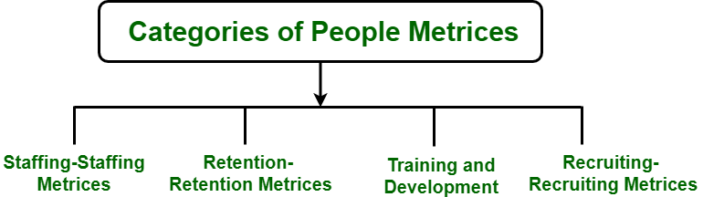
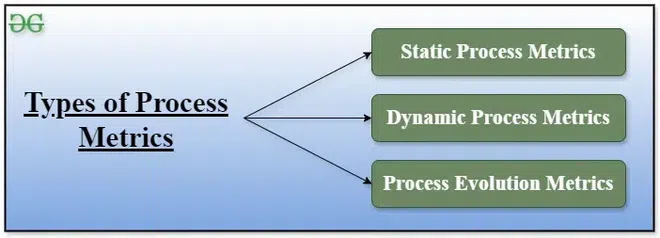

6.2 People Metrics & Process Metrics
Software metrics are not limited to code size and complexity. People metrics focus on the human resources that build software, while process metrics focus on how the development process performs over time. Together they help managers improve collaboration, productivity, and process quality — leading to better project outcomes.
People metrics (personnel metrics)
People metrics — also called personnel metrics or resource metrics — quantify useful attributes of the staff who use processes, methods, and tools to produce software products.
- People metrics tell managers about turnover rates, productivity, absenteeism, collaboration quality, and workforce cost.
- Tracking people metrics ensures team members are motivated, supported, and performing at their best.
- Early identification of attrition or morale problems prevents larger project failures later.

Top people metrics to track
- Productivity: Measures how much work is completed in a given period — e.g., LOC or function points produced per developer per month.
- Employee Net Promoter Score (eNPS): Measures how likely employees are to recommend their workplace; indicates overall satisfaction.
- Team collaboration: Tracks communication frequency, participation in team activities, and peer feedback on teamwork quality.
- Attrition (turnover rate): Percentage of employees leaving the organisation in a period; high attrition signals retention problems.
- Absenteeism: Frequency of unplanned absences; patterns may reveal workload, health, or motivation issues.
- Total cost of workforce: Sum of salaries, benefits, training, and all employment-related expenses — used for budget control.
- Quality of work: Evaluates whether deliverables meet standards through QA checks, stakeholder feedback, and performance reviews.
Process metrics
Process metrics are measures of the development process that creates the body of software. A common example is the length of time required to complete a software creation task.
- Process metrics assume that product quality is a function of process quality — a better process produces a more reliable product.
- They are linked to standards such as ISO 9000 Quality Management, which defines generic requirements for quality systems.
- Because software is intangible, managers use process metrics to objectively track progress, productivity, and predictions about schedule and resources.
- Process metrics feed into empirical models such as COCOMO, which predicts effort based on project characteristics.
- Process metrics are primarily management tools — they measure resource usage and schedule rather than program structure directly.

Three categories of process metrics
- Static process metrics: Directly related to the defined process structure — e.g., number of role types, number of artifact types in the process model.
- Dynamic process metrics: Related to process performance — e.g., how many activities are performed, how many artifacts are created during an iteration.
- Process evolution metrics: Related to how the process changes over time — e.g., number of iterations, frequency of process updates.
Top process metrics to track
- Lead time: Total time from initiating a task to its completion — shows end-to-end delivery speed.
- Cycle time: Duration of one complete cycle of a process from start to finish within the workflow.
- Throughput: Rate at which tasks or features are completed in a given timeframe — reflects team capacity.
- Work in Progress (WIP): Number of tasks currently being worked on but not yet finished — helps identify bottlenecks.
- Defect density: Number of defects found per unit of work or per KLOC — assesses process and product quality.
- Process efficiency: Ratio of value-added work to non-value-added work — identifies waste in the process.
- Process compliance: Extent to which the team follows defined standards, guidelines, and regulations.
People vs process vs product metrics
| Aspect | People metrics | Process metrics | Product metrics |
|---|---|---|---|
| Focus | Team members and their performance | Development activities and workflow | Software attributes (size, complexity) |
| Examples | Productivity, attrition, eNPS | Lead time, defect density, compliance | LOC, FP, cyclomatic complexity |
| Primary user | HR and project managers | Process managers, quality teams | Designers, testers, estimators |
| Exam classification | People metrics | Process metrics | Product metrics (size & complexity) |
Q1 (UGC-NET): Size and complexity are a part of — (A) People Metrics (B) Project Metrics (C) Process Metrics (D) Product Metrics.
Answer: (D) Product Metrics — size (LOC, FP) and complexity (cyclomatic, Halstead) describe the software product itself.
Q2 (UGC-NET): Which attribute should NOT be encompassed by effective software metrics? (D) Programming language dependent.
Answer: (D) — good metrics should be language independent.
Q3: Distinguish people metrics from process metrics with two examples each.
Model answer points:
- People metrics quantify workforce attributes: productivity, attrition, absenteeism, collaboration.
- Process metrics quantify development workflow: lead time, cycle time, defect density, compliance.
- Static/dynamic/evolution categories apply to process metrics.
- Process metrics link to ISO 9000 and COCOMO; people metrics link to team management and retention.